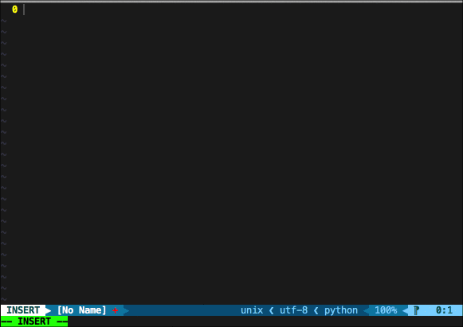
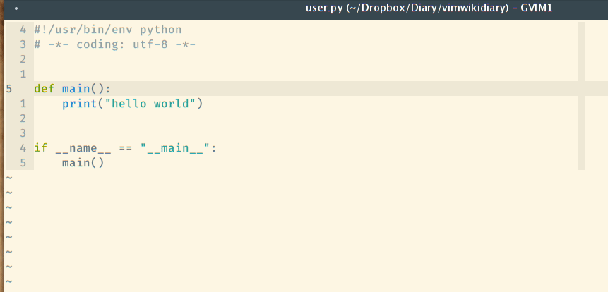

简介
ext install corvofeng.Vsnips

程序依然在开发中, 虽然我不能保证所有的UltiSnips片段都可以在vscode中使用, 但我会尽最大的努力去兼容 UltiSnips, 并且允许用户自定义一些功能函数.
有任何想法欢迎开 issue 或是 pull requests.
UltiSnips¶
UltiSnips 为 VIM 中的插件, 有关 UltiSnips 的详细简介请看这里.
.
定义 UltiSnipts 格式的代码片段是十分简单的, 以Python语言为例, 我平时会经常用到import IPython; IPython.embed(),
在 UltiSnips 中, 你可以这样用:
# 请注意, 下面的片段必须保存在 python.snippets, 这样才能被 Python 语言使用.
snippet dbg "Use IPython to debug"
# ---------- XXX: Can't GIT add [START] ---------- #
import IPython
IPython.embed(using=False)
# ---------- XXX: Can't GIT add [END] ---------- #
endsnippet
从上面的实例来看, 一个代码片段以snippet开头, 以endsnippet结尾,
随后的dbg用于触发这个片段, "Use IPython to debug"自然就是
这一片段的描述信息了, 在我的的 vim 中, 此片段有如下的效果:
.
VScode 代码片段管理¶
在 VScode 中, 有自己原生的代码片段管理方式, 你可以依据 snippets语法 来编写自己的代码片段. 但它有几个弊端,
- 以json的形式保存的代码片段对换行支持并不友好, 多行的片段写起来并不方便
- 多台电脑同步代码片段并不容易, 我发现好多各个语言都有自己的代码片段插件, 比如: C/C++ Snippets, Bootstrap 3 Snippets.
并不是说每种语言有自己的代码片段插件不好, 只是当你想要改动或是增加自己的语言片段时, 极大可能是要完整的学习一遍插件的制作, 以及代码片段的书写. 而且更为重要的一点是, 如果你同时也是 Vim 用户, 你就不得不为两个编辑器各写一套代码片段了, 这样的折磨我受了很久, 于是便有了这个插件.
Vsnips 基础使用¶
该插件基于 VScode 原生的代码补全功能, 无论你先前是否有过 Vim 或是 UltiSnips 的使用经历, 都可直接使用此插件. 我已经将部分的 UltiSnips 进行了适配, 并且默认给所有用户使用.
当然如果你先前已经使用过了 UltiSnips, 有了自己的代码片段, 那么你可以直接在配置中添加自己的片段文件目录, 并且你可以引用在 vimrc 中定义的变量.
{
"Vsnips.VarFiles": [
"/home/corvo/.vimrc",
"/home/corvo/.vim/common.vim",
],
"Vsnips.SnipsDir": [
"/home/corvo/.vim/UltiSnips"
]
}
当你在 vimrc 中给出了如下变量let g:snips_author="corvo", 在代码片段中, 可以使用如下的形式引用,
无论是在 Vim 还是在 VScode 中均可正常使用.
snippet full_title "Python title fully"
#!/usr/bin/env python
# -*- coding: utf-8 -*-
# vim: ts=4 sw=4 tw=99 et:
"""
@Date : `!v strftime("%B %d, %Y")`
@Author : `!v g:snips_author`
"""
endsnippet
已经完善的功能¶
- 安装后即有多种语言补全的支持
- 允许用户添加自己的 UltiSnips 片段
- 从 UltiSnips 格式到 VScode 格式的转换
- Vim 中 strftime 函数支持
- 允许用户自定义变量
- 少量的 Python 函数支持(使用 Javascript 重写)
- snippets 语法高亮
- 对于用户自定义 JavaScript 函数的支持
- 支持
autoDocstring的功能, 允许为函数增加注释, 当前已经支持(Python, TypeScript, Golang) - box 功能的支持
正在开发的功能¶
- 支持
extends与priority语句 - 用户用户选取 box 片段后再次进行编辑